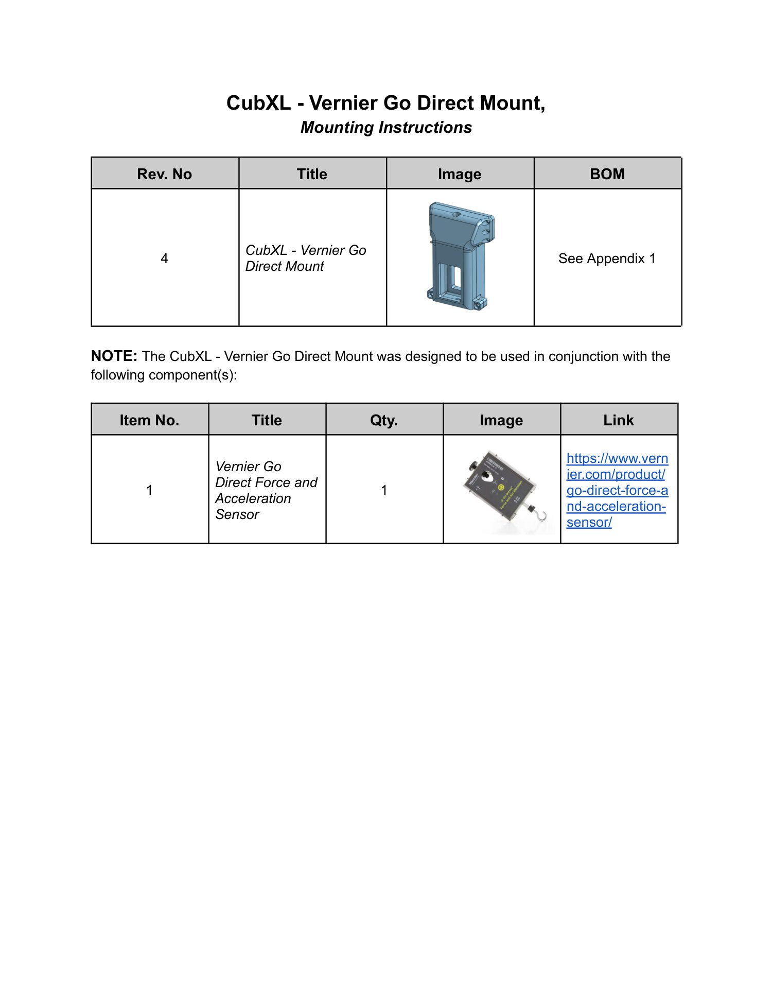
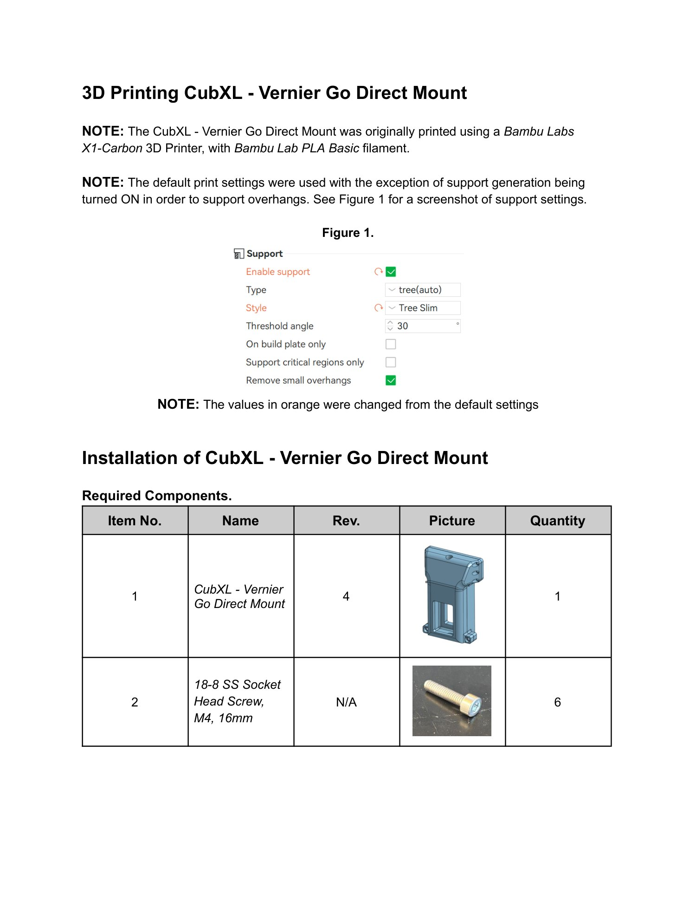
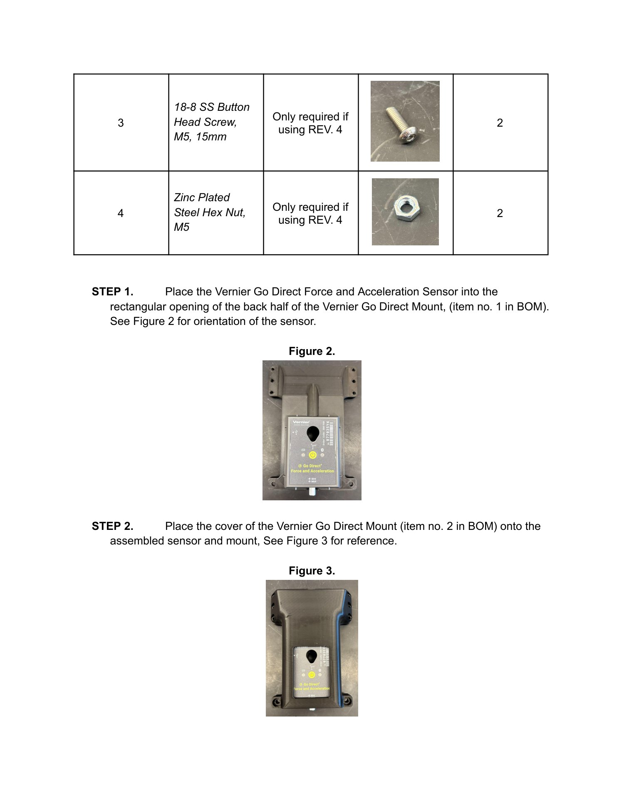
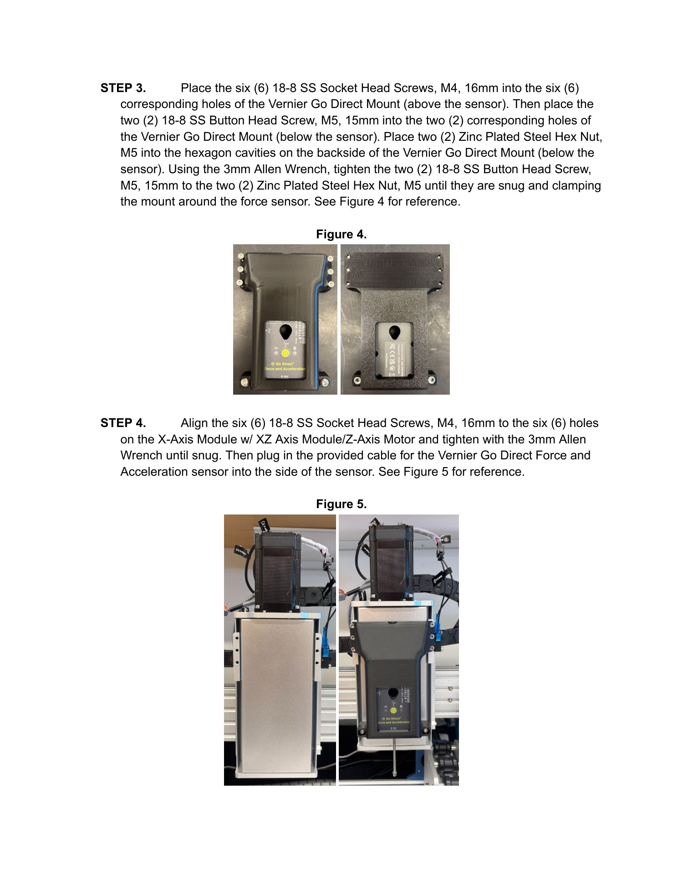
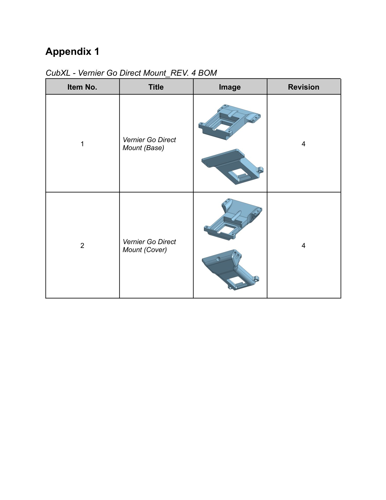

Mounting guide · CubXL
CubXL Vernier Go Direct Mount
Install the Vernier Go Direct Force and Acceleration Sensor in the CubXL mount and fasten the mount to the X-axis module.
Source: CubXL - Vernier Go Direct Mount, Mounting Instructions.
Parts
| No. | Part | Qty. |
|---|---|---|
| 1 | CubXL - Vernier Go Direct Mount, rev. 4 | 1 |
| 2 | 18-8 SS Socket Head Screw, M4, 16mm | 6 |
| 3 | 18-8 SS Button Head Screw, M5, 15mm | 2 |
| 4 | Zinc Plated Steel Hex Nut, M5 | 2 |
| 5 | Vernier Go Direct Force and Acceleration Sensor | 1 |
Print notes
The reference print used a Bambu Labs X1-Carbon 3D Printer with Bambu Lab PLA Basic filament. The source instructs the operator to turn support generation on for overhangs. See the illustrated manual below for the slicer settings and assembly orientation.
Mount the sensor
- Place the Vernier Go Direct Force and Acceleration Sensor into the rectangular opening of the back half of the mount.
- Place the cover onto the assembled sensor and mount.
- Place the six M4 × 16mm socket head screws into the six corresponding holes above the sensor. Place the two M5 × 15mm button head screws into the two corresponding holes below the sensor, then place two M5 hex nuts into the hexagonal cavities on the back. Using a 3mm Allen wrench, tighten until snug and clamping the mount around the sensor.
- Align the six M4 × 16mm socket head screws with the six holes on the X-axis module with XZ-axis module/Z-axis motor. Tighten with the 3mm Allen wrench until snug. Plug the provided cable into the side of the Vernier sensor.
Illustrated source manual
Read the original assembly figures and parts tables below. These pages were retrieved from KABLab on September 22, 2026. Open the source Google Doc for later changes.
View all 5 illustrated pages




